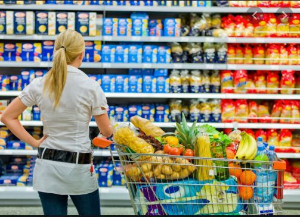

德国人囤罐头，结果发现半数是中国造
新冠肺炎疫情快速扩散下，德国政府建议每个成年人都应储备可支撑10天的食物。许多德国人选择贮存果蔬、速食等罐头。
德国电视台最近对各大型超市的罐头食品进行调查，发现一半以上是“中国制造”。这些罐头既有蘑菇、胡萝卜、玉米、莴笋、梨、桃子等蔬菜水果，也有香肠、面条、米饭等速食，可谓应有尽有。甚至通常听起来更像是“意大利制造”的番茄酱也来自中国。
中国罐头到底有什么优势？食品进口商米谢埃尔·德隆解释说：“与其他国家相比，中国具有成本优势。卖中国罐头的利润率更高。”
 德国超市，图源：“The Local”新闻
中国的蔬菜水果品种多，可以满足欧洲人的需求。即使是本地没有的食物品种，也可以先进口再加工，然后出口到欧洲。此外，中国工人的工作效率也很高。可以说，中国罐头食品企业拥有种类和速度的综合优势，欧洲本土及其他地区的公司很难与之竞争。
德国《快讯报》3月15日文章，原题：我们的食品罐头里有“太多的中国” ，青木 译